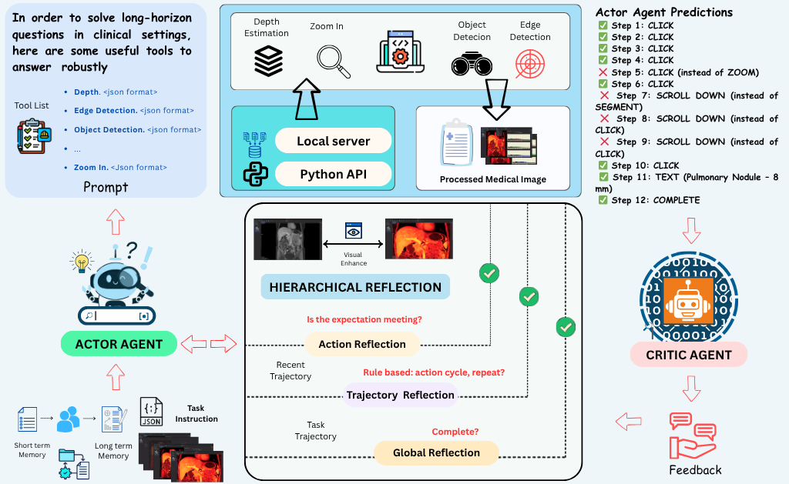
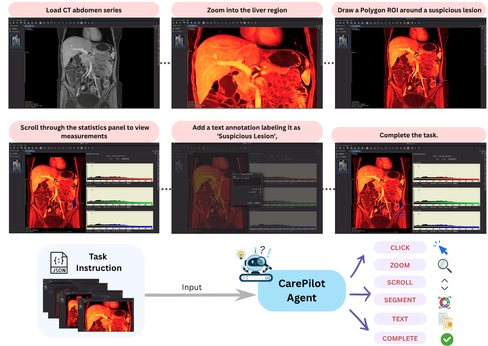

Figure 1. Overview of the CarePilot framework. An Actor–Critic multi-agent architecture governs hierarchical decision-making for long-horizon healthcare workflows. At each step, the Actor observes the current interface, integrates tool-grounding signals and dual-memory context, then predicts the next semantic action. The Critic evaluates outcomes, provides corrective feedback, and updates both memory buffers.
Multimodal agentic pipelines are transforming human–computer interaction by enabling efficient and accessible automation of complex, real-world tasks. However, recent efforts have focused on short-horizon or general-purpose applications (e.g., mobile or desktop interfaces), leaving long-horizon automation for domain-specific systems, particularly in healthcare, largely unexplored. To address this, we introduce CareFlow, a high-quality human-annotated benchmark comprising complex, long-horizon software workflows across medical annotation tools, DICOM viewers, EHR systems, and laboratory information systems. On this benchmark, existing vision–language models (VLMs) perform poorly, struggling with long-horizon reasoning and multi-step interactions in medical contexts. To overcome this, we propose CarePilot, a multi-agent framework based on the actor–critic paradigm. The Actor integrates tool grounding with dual-memory mechanisms—long-term and short-term experience—to predict the next semantic action from the visual interface and system state. The Critic evaluates each action, updates memory based on observed effects, and either executes or provides corrective feedback to refine the workflow. Our experiments show that CarePilot achieves state-of-the-art performance, outperforming strong closed-source and open-source multimodal baselines by approximately 15.26% and 3.38% on our benchmark and out-of-distribution dataset, respectively.
CarePilot is a memory- and tool-augmented multi-agent framework built on the actor–critic paradigm. At each timestep t, the system runs through four tightly coupled stages.
Before predicting any action, CarePilot enriches perception of the GUI using four lightweight tools:
All four outputs are fused into a perceptual grounding signal φt that conditions both memory updates and action prediction.
Two complementary memories provide immediate and long-range context:
The Actor always conditions on both memories, giving it situational awareness at every timescale.
Both agents share the same VLM backbone (Qwen-VL), differing only in role:
The Actor is fine-tuned on Critic-augmented trajectories via supervised fine-tuning (SFT), internalizing the Critic's structured reasoning into its weights.
At inference only the Actor is retained — given the GUI state, task instruction, and memory context, it directly predicts the next action without the Critic, drastically reducing compute while preserving all quality gains from hierarchical reflection.
CareFlow is the first large-scale, human-annotated benchmark dedicated to long-horizon healthcare software automation. It contains 1,100 tasks (735 train / 315 test + 50 OOD), each paired with a trajectory of 8–24 consecutive GUI screenshots. Every screenshot is labeled with an interface-invariant next-action from a six-primitive action space: CLICK SCROLL ZOOM TEXT SEGMENT COMPLETE.

Figure 2. Example task trajectory from CareFlow. Each task pairs a natural-language goal with a sequence of GUI screenshots representing authentic clinical workflows across DICOM viewers, annotation tools, EMR/EHR, and LIS platforms.
We evaluate CarePilot against strong open- and closed-source multimodal baselines using two metrics: Step-Wise Accuracy (SWA) — fraction of correct next-action predictions across all steps — and Task Accuracy (TA) — fraction of tasks where every action is predicted correctly in order.
Table 1. Results on CareFlow. Best results are bold; best among baselines are underlined. Green rows are our method.
| Model | Weasis | 3D Slicer | Orthanc | OpenEMR | Average | |||||
|---|---|---|---|---|---|---|---|---|---|---|
| SWA | TA | SWA | TA | SWA | TA | SWA | TA | SWA | TA | |
| Qwen2.5 VL 32B | 79.95 | 5.13 | 68.00 | 1.90 | 48.62 | 2.42 | 41.60 | 0.32 | 60.72 | 2.43 |
| Llama 3.2 11B | 86.03 | 10.26 | 76.47 | 4.60 | 69.58 | 13.58 | 62.56 | 11.47 | 75.65 | 9.50 |
| Llama 4 Scout | 84.34 | 10.26 | 78.47 | 2.70 | 88.56 | 23.90 | 85.55 | 21.79 | 85.65 | 13.50 |
| Llama 4 Maverick | 88.21 | 18.69 | 71.55 | 3.40 | 84.99 | 27.99 | 77.97 | 25.68 | 80.53 | 19.20 |
| Qwen3 VL 235B | 83.14 | 17.69 | 72.44 | 5.30 | 87.48 | 25.40 | 84.46 | 24.52 | 81.85 | 19.70 |
| Mistral 3.2 VL 24B | 88.15 | 5.13 | 64.81 | 0.67 | 68.44 | 0.79 | 61.43 | 0.00 | 70.65 | 1.67 |
| Nemotron 12B VL | 86.98 | 12.82 | 73.95 | 5.13 | 73.56 | 14.46 | 66.55 | 12.36 | 77.93 | 10.71 |
| GPT-4o | 85.30 | 20.00 | 77.50 | 27.37 | 88.50 | 26.67 | 85.10 | 27.50 | 83.13 | 25.40 |
| GPT-5 | 88.72 | 31.25 | 81.42 | 37.90 | 86.92 | 46.67 | 83.82 | 31.25 | 85.22 | 36.19 |
| Gemini 2.5 Pro | 68.90 | 3.75 | 59.70 | 5.26 | 71.30 | 6.66 | 61.70 | 6.75 | 65.15 | 5.39 |
| CarePilot (Qwen 2.5 VL-7B) | 90.38 | 40.00 | 82.09 | 54.75 | 93.80 | 55.00 | 90.18 | 56.70 | 88.05 | 48.90 |
| CarePilot (Qwen 3 VL-8B) | 92.50 | 48.76 | 88.90 | 54.80 | 91.80 | 56.67 | 87.52 | 46.25 | 90.18 | 51.45 |
Table 2. Out-of-Distribution results on OpenHospital. Green rows denote CarePilot.
| Model | SWA | TA |
|---|---|---|
| Qwen2.5 VL 32B | 71.74 | 12.72 |
| Llama 3.2 11B | 70.76 | 16.36 |
| Llama 4 Scout | 72.20 | 20.75 |
| Llama 4 Maverick | 73.71 | 27.27 |
| Qwen3 VL 235B | 75.18 | 25.46 |
| Mistral 3.2 VL 24B | 69.63 | 1.82 |
| Nemotron 12B VL | 72.90 | 18.18 |
| Gemini 2.5 Pro | 73.90 | 18.87 |
| GPT-4o | 74.63 | 25.48 |
| GPT-5 | 79.70 | 34.80 |
| CarePilot (Qwen 2.5 VL-7B) | 77.93 | 36.40 |
| CarePilot (Qwen 3 VL-8B) | 79.27 | 38.18 |
Table 3. Ablation on contextual components (Qwen 2.5 VL-7B). TG = Tool Grounding, LTM = Long-Term Memory, STM = Short-Term Memory.
| TG | LTM | STM | SWA | TA |
|---|---|---|---|---|
| ✗ | ✓ | ✓ | 73.20 | 9.37 |
| ✓ | ✗ | ✓ | 82.10 | 23.67 |
| ✓ | ✓ | ✗ | 80.40 | 30.42 |
| ✓ | ✓ | ✓ | 88.05 | 48.90 |
@misc{ghosh2026carepilotmultiagentframeworklonghorizon,
title={CarePilot: A Multi-Agent Framework for Long-Horizon Computer Task Automation in Healthcare},
author={Akash Ghosh and Tajamul Ashraf and Rishu Kumar Singh and Numan Saeed and Sriparna Saha and Xiuying Chen and Salman Khan},
year={2026},
eprint={2603.24157},
archivePrefix={arXiv},
primaryClass={cs.CV},
url={https://arxiv.org/abs/2603.24157},
}